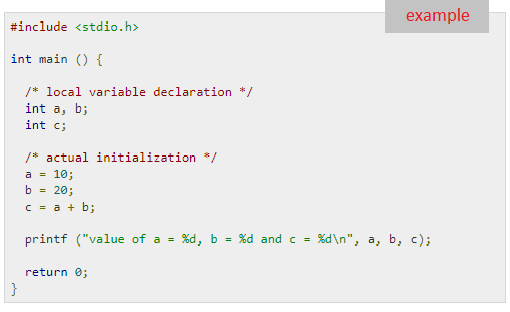
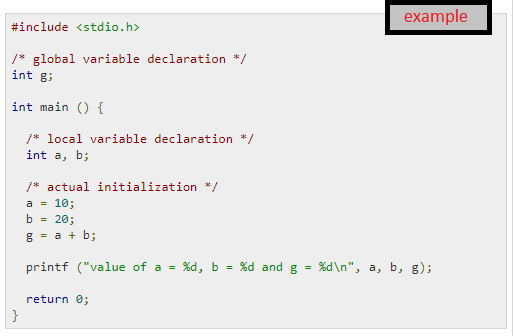
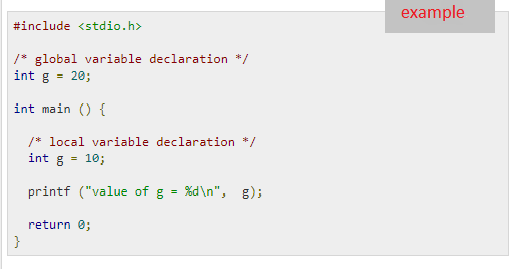
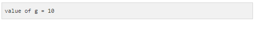
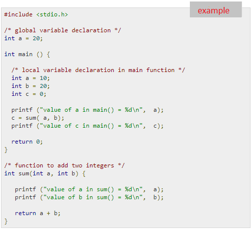
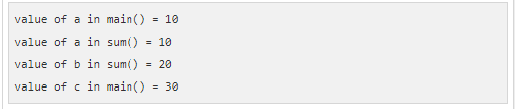
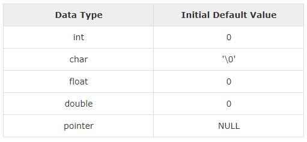

SCOPE RULES In C Programming
Scope Rules
A scope in any programming is a region of the program where a defined variable can have its existence and beyond that variable it cannot be accessed. There are three places where variables can be declared in C programming language -
- Inside a function or a block which is called local variables.
- Outside of all functions which is called global variables.
- In the definition of function parameters which are called formal parameters.
Let us understand what are local and global variables, and formal parameters.
Local Variables
Variables that are declared inside a function or block are called local variables. They can be used only by statements that are inside that function or block of code. Local variables are not known to functions outside their own. The following example shows how local variables are used. Here all the variables a, b, and c are local to main() function.
Global Variables
Global variables are defined outside a function, usually on top of the program. Global variables hold their values throughout the lifetime of your program and they can be accessed inside any of the functions defined for the program.
A global variable can be accessed by any function. That is, a global variable is available for use throughout your entire program after its declaration. The following program show how global variables are used in a program.
A program can have same name for local and global variables but the value of local variable inside a function will take preference. Here is an example -

When the above code is compiled and executed, it produces the following result -
Formal Parameters
Formal parameters, are treated as local variables with-in a function and they take precedence over global variables. Following is an example -
When the above code is compiled and executed, it produces the following result -
Initializing Local and Global Variables
When a local variable is defined, it is not initialized by the system, you must initialize it yourself. Global variables are initialized automatically by the system when you define them as follows -
It is a good programming practice to initialize variables properly, otherwise your program may produce unexpected results, because uninitialized variables will take some garbage value already available at their memory location.